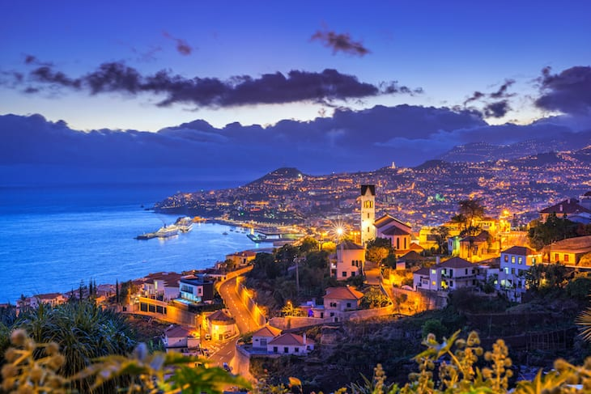
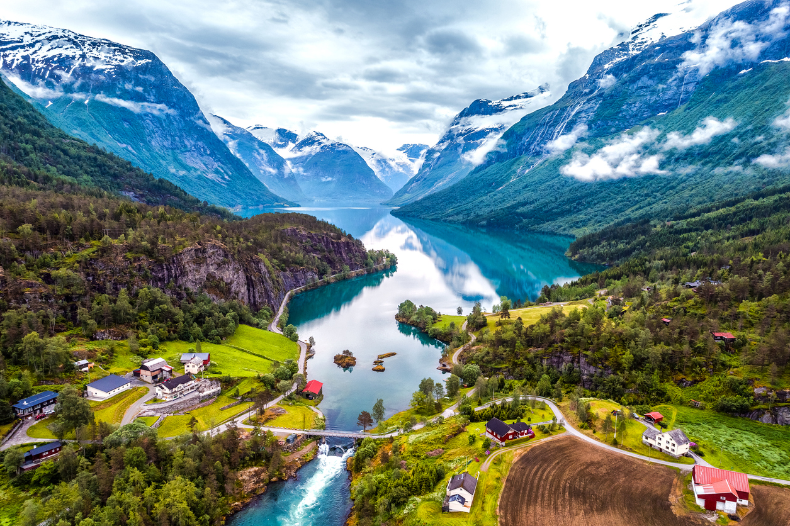

Nice é considerada a capital da Riviera Francesa, sendo a cidade mais importante da região e também a mais visitada, recebendo cerca de 4 milhões de turistas anualmente. A cidade é bastante procurada principalmente durante o verão, quando o clima e temperatura em Nice são ideais para aproveitar suas belíssimas praias. No entanto, a cidade também tem outros atrativos interessantes, como museus e monumentos históricos. Vale muito a pena visitar e se hospedar nesse local.
Ilha da madeira
Uma das principais dicas da Ilha da Madeira é curtir a natureza, o sol e o mar. Você pode só apreciar, curtindo o visual, ou pode entrar de cabeça em aventuras radicais. Ainda se pode desfrutar de bons restaurantes e das boas hospedagens. A Ilha da Madeira é pra este perfil de viajante, que curte natureza. Além das praias, as atividades ao ar livre incluem canoagem, rapel, mountain biking, trilhas, surfe e passeios por locais históricos.
Noruega
O luxo na Noruega está em viver experiências memoráveis, com cenários deslumbrantes ao fundo. O país combina belezas naturais, grande riqueza cultural e um povo hospitaleiro, que valoriza a igualdade e o respeito. O destino oferece experiências inusitadas e exclusivas que passam pelos encantadores fiordes e pela magia da aurora boreal e do sol da meia-noite. De norte a sul, existem inúmeras possibilidades para deixar qualquer tipo de viajante extasiado, em qualquer época do ano.